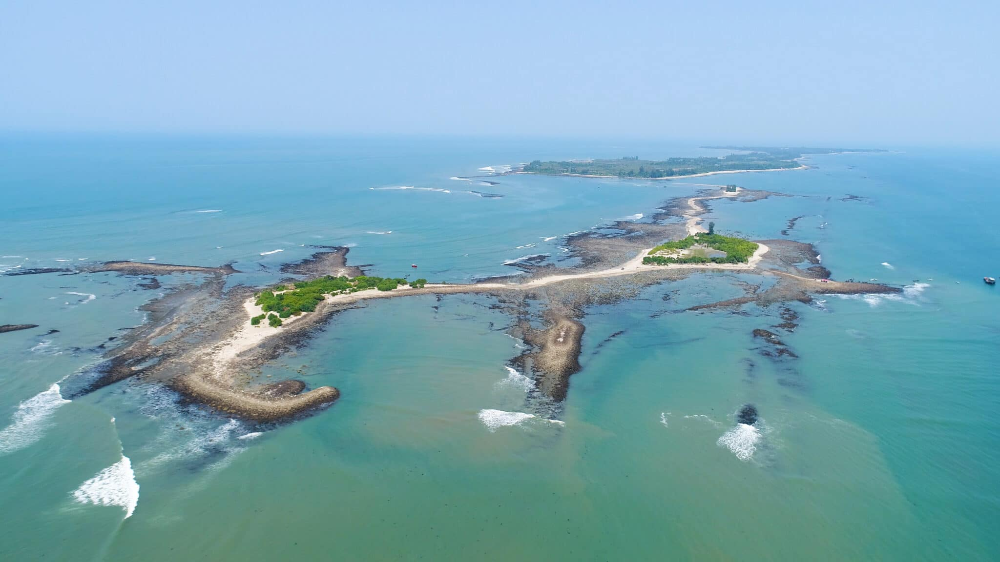
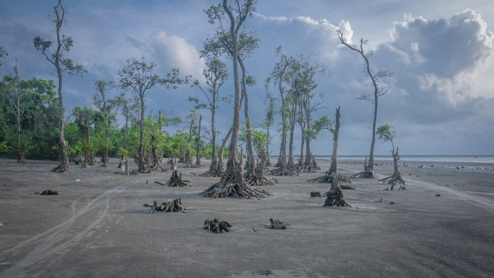
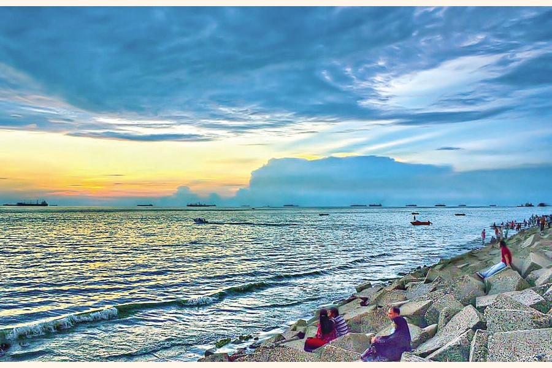

Home Page
Welcome to the world of SEA
Lets Explore the Sea View of Bangladesh
Cox's Bazar
Largest Sea Beach In World

Cox's Bazar Beach located at Cox's Bazar, Bangladesh, is the longest natural sea beach in the world running 120 kilometres (75 mi) and 5th longest beach after Praia do Cassino of Brazil, Padre Island on the US Gulf Coast, Eighty Mile Beach in Western Australia, and Ninety Mile Beach of Australia. It is the top tourist destination of Bangladesh.
There are some points to visit in Coxs Bazar
- Kolatoli Point
- Sugandha Point
- Laboni Point
- Inani Beach
- Himchori
Cox’s Bazar–Teknaf Marine Drive is an 80-kilometre-long road from Cox’s Bazar to Teknaf along the Bay of Bengal and it is the world’s longest marine drive. It was inaugurated on 6 May 2017, by Prime Minister Sheikh Hasina
Saint Martin
A wonder around Bangladesh

St. Martin's Island is a small island (area only 3 km2) in the northeastern part of the Bay of Bengal, about 9 km south of the tip of the Cox's Bazar-Teknaf peninsula, and forming the southernmost part of Bangladesh. There is a small adjoining island that is separated at high tide, called Chera Dwip. It is about 8 kilometres (5 miles) west of the northwest coast of Myanmar, at the mouth of the Naf River.
Most of the island's approximately 3,700[4] inhabitants live primarily from fishing. The other staple crops are rice and coconut. Being very common on the island, algae are collected, dried, and exported to Myanmar. Between October and April, the fishermen from neighboring areas bring their caught fishes to the island's temporary wholesale market. However, imports of chicken, meat and other foods come in from the mainland Bangladesh and Myanmar. As the centre and the south are mainly farmland and makeshift huts, most of the permanent structures are around the far north.
Katka Sea Beach
A sea beach wonder in Mangrove Forest

Kotka Sea Beach is one of the most interesting places in the Sundarbans. Cuttack has located about 90 km from the port of Mongla and is the main center of the Sundarbans East Sanctuary. One of the main attractions of the Sundarbans is the Royal Bengal Tiger. But seeing tigers in the forest is as risky as it is heavy.
However, both the sighting of the tiger and its safe stay is possible from the Katka Sanctuary, an excellent tourist destination in the Sundarbans. One of the main attractions of the Sundarbans is the Royal Bengal Tiger.
Apart from this, Katka Sanctuary has always occupied a special place in the list of tourist favorites due to the presence of beautiful Chitra deer herds, different species of birds, calm nature, and various wild animals.
Patenga Sea Beach
A Wonder of Chittagong

Patenga is a sea beach located 14 kilometres south of the port city of Chittagong, Bangladesh. It is near the mouth of the Karnaphuli River. Patenga beach is one of the most popular beaches of Bangladesh, stretching for miles near at the meeting place of the Bay of Bengal and the river Karnaphuli. Nature lovers come around here to enjoy the scenic beach area to gateway from busy city life and breath in fresh air.
Patenga is a popular tourist spot. The beach is very close to Bangladesh Naval Academy of Bangladesh Navy, and Shah Amanat International Airport. The beach width is narrow and swimming in the seas is not recommended. Part of the seashore is built-up with concrete walls. Also large blocks of stones have been laid out to prevent erosion. During 1990s a host of restaurants and kiosks have sprouted out around the beach area. Lighting of the beach area has enhanced the security aspect of visiting in the night. People rise up early in the morning to witness the beautiful sunrise.